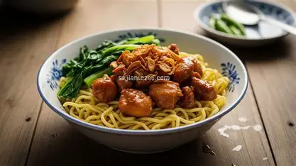

Mie Ayamm Recipes

-
Ingredients
The Chicken Topping (Ayam Kecap)
- 300g Chicken breast or thigh (cut into small cubes).
- 100g Mushrooms (button or straw mushrooms, sliced—optional).
- 3 tbsp Sweet soy sauce (Kecap Manis)
- 1 tbsp Oyster sauce.
- 2 Green onions (finely sliced).
- Spice Paste (Blend these): 5 Shallots, 3 cloves Garlic, 2cm Turmeric, 2cm Ginger, and 2 Candlenuts.
- Aromatics: 2 Bay leaves and 1 stalk Lemongrass (bruised).
The Chicken Oil (The Secret Flavor)
- 100ml Vegetable oil.
- 50g Chicken skin or fat.
- 2 cloves Garlic (crushed).
- 1 slice Ginger (thinly sliced).
Noodles & Assembly
- 500g Fresh egg noodles (specifically for Mie Ayam).
- 1 bunch Choy Sum or Bok Choy (cut into pieces).
- For the Soup: A simple broth made from boiling chicken bones with garlic, salt, and pepper.
- Condiments: Fried shallots, chili sauce (sambal), and crispy wontons (optional).
-
Instructions
Making the Chicken Oil
- Heat the oil in a pan over low heat.
- Add the chicken skin, crushed garlic, and ginger.
- Fry slowly until the skin is crispy and the oil is fragrant. Strain the oil and set it aside. This oil is what gives the noodles their signature aroma.
Cooking the Chicken Topping
- Sauté the Spice Paste with bay leaves and lemongrass until fragrant and fully cooke
- Add the chicken cubes (and mushrooms). Stir until the chicken changes color.
- Add sweet soy sauce, oyster sauce, salt, and pepper. Pour in about 150ml of water.
- Simmer until the sauce thickens and the flavors are absorbed. Stir in the green onions and set aside.
Boiling the Noodles & Veggies
- Bring a large pot of water to a boil.
- Cook the egg noodles and Choy Sum separately. Ensure the noodles are al dente (not too mushy). Drain immediately.
The Assembly
- In a serving bowl, add 1 tbsp of Chicken Oil and 1 tsp of light soy sauce (or a pinch of salt)
- Add the freshly boiled noodles and toss quickly so they don't stick together.
- Place the greens on top, followed by a generous spoonful of the chicken topping.
- Garnish with fried shallots and serve with a side of hot broth in a separate small bowl.